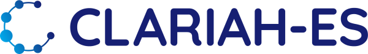

Todos los recursos para tu investigación digital
Datos lingüísticos, herramientas de procesamiento, patrimonio cultural digital, formación, financiación y asesoramiento experto — las dos grandes infraestructuras europeas de Humanidades y Ciencias Sociales, desde un único punto de acceso coordinado por CLARIAH-ES.
Encuentra datos, herramientas y más
Catálogos y buscadores para localizar corpus, léxicos, herramientas, publicaciones, flujos de trabajo y materiales formativos en toda Europa.
Virtual Language Observatory
Busca y explora metadatos de cientos de repositorios. Filtra por idioma, tipo de recurso, modalidad, licencia y más. Tu punto de partida para datos lingüísticos.
descubrimiento CLARIN+DARIAHSSH Open Marketplace
Portal de descubrimiento de herramientas, servicios, materiales formativos, datasets, publicaciones y workflows para Humanidades y Ciencias Sociales. Más de 5.000 recursos.
5.000+ recursos CLARINFederated Content Search
Busca patrones específicos en todas las colecciones de datos alojadas en centros CLARIN — ideal para consultas exploratorias iniciales.
búsquedaHerramientas para tu flujo de trabajo
Desde procesamiento lingüístico automático hasta ediciones digitales y análisis de texto — herramientas listas para usar.
Language Resource Switchboard
Sube un archivo o pega una URL — el Switchboard encuentra automáticamente la herramienta CLARIN adecuada para procesar tus datos paso a paso.
procesamiento CLARINParlaMint Parliamentary Corpora
Corpus comparables de debates parlamentarios de 29 países europeos — más de mil millones de palabras, codificados en TEI con anotaciones UD.
flagship DARIAHDARIAH Tools & Services Catalogue
Catálogo de herramientas nacionales de DARIAH: ediciones digitales, topic modelling, Voyant Tools, repositorios, hosting y más.
herramientasAlmacena tus datos de forma sostenible
Repositorios certificados para archivar tus recursos con metadatos, identificadores persistentes y preservación a largo plazo.
Depositing Services
Almacena tus corpus, léxicos, grabaciones y anotaciones en un repositorio CLARIN B-Centre certificado con soporte de preservación a largo plazo.
archivo CLARINVirtual Collection Registry
Crea y comparte colecciones virtuales de recursos de distintos centros sin necesidad de mover ni copiar datos.
colecciones DARIAHDARIAH Open Science
Directrices y buenas prácticas sobre datos FAIR, ciencia abierta y planes de gestión de datos para Artes y Humanidades.
FAIR · open science TercerosZenodo
Repositorio abierto del CERN para cualquier tipo de resultado de investigación — datos, software, publicaciones y más. DOI gratuito, hasta 50 GB por depósito.
repositorio · DOIConsulta a los especialistas
Centros de conocimiento y grupos de trabajo con asesoramiento gratuito — desde lingüística computacional hasta patrimonio cultural digital.
K-Centre Catalogue
Explora y filtra los 50+ Knowledge Centres por idioma, modalidad o servicio. Helpdesk con respuesta en dos días laborables.
directorio CLARINSpanish CLARIN K-Centre
Experiencia en tecnologías del lenguaje para el español y las lenguas co-oficiales, alojado en HiTZ (UPV/EHU). Tu punto de contacto en España.
CLARIAH-ES DARIAHDARIAH Working Groups
Grupos de trabajo temáticos: patrimonio cultural, lingüística computacional, ediciones digitales, ética (ELDAH), geopolítica, bibliografía y más.
comunidades CLARINB-Centres y C-Centres
Red de centros técnicos certificados — la columna vertebral de CLARIN. Repositorios que alojan recursos y ejecutan herramientas de forma sostenible.
infraestructuraImpulsa tu investigación
Becas de movilidad, apoyo para propuestas europeas y financiación de talleres y escuelas de verano.
CLARIN Mobility Grants
Hasta 1.200 € para estancias cortas (una semana) entre centros CLARIN de distintos países — para investigadores, desarrolladores y educadores.
hasta 1.200 € DARIAHDARIAH Small Grants & Calls
Financiación para Working Groups, becas para escuelas de verano, acceso transnacional (TNA) a través del proyecto ATRIUM y convocatorias abiertas.
convocatorias CLARINApoyo Horizon Europe
Apoyo a miembros que preparan propuestas para Horizon Europe y otros programas de financiación de la UE sobre temas estratégicos para CLARIN.
proyectos UEDesarrolla tus competencias digitales
Tutoriales, cursos universitarios, escuelas de verano y una revista científica dedicada a las Humanidades Digitales.
DARIAH Campus
Plataforma de recursos formativos abiertos: tutoriales sobre métodos digitales, gestión de datos, GDPR, ediciones digitales, análisis de texto y patrimonio cultural.
tutoriales CLARINCLARIN Learning Hub
Módulos formativos, materiales de cursos y catálogo de recursos educativos abiertos de la comunidad CLARIN para docencia y autoestudio.
materiales CLARIN+DARIAHDH Course Registry
Encuentra cursos universitarios y escuelas de verano en Humanidades Digitales en toda Europa — una iniciativa conjunta.
cursos CLARIN+DARIAHFormación CLARIAH-ES
Talleres, eventos y actividades formativas organizados por los nodos españoles del consorcio CLARIAH-ES a nivel nacional.
España DARIAHPublicaciones de DARIAH
Las publicaciones de DARIAH se comparten y archivan en dos repositorios: la colección de DARIAH en el repositorio HAL y la comunidad DARIAH en Zenodo.
publicaciones DARIAHTransformations: A DARIAH Journal
Revista científica multilingüe de DARIAH ERIC (2024–), dedicada a métodos digitales reproducibles en Humanidades y Ciencias Sociales.
revista CLARINPublicaciones de CLARIN
Aquí encontrarás la biblioteca de CLARIN en Zotero, seleccionada manualmente, donde podrás consultar todas las publicaciones relacionadas con CLARIN.
publicaciones CLARINFederated Login & Access
Cómo acceder con credenciales académicas a recursos protegidos de CLARIN. ¿Sin cuenta académica? Regístrate gratis.
autenticaciónNoticias, eventos y comunidad
Newsletters, conferencias anuales, webinars y blogs de CLARIN, DARIAH y CLARIAH-ES para seguir la actualidad de las infraestructuras.
CLARIN Newsletter
Boletín periódico con novedades sobre recursos, herramientas, proyectos financiados y actividades de la red CLARIN. Suscripción gratuita.
newsletter DARIAHDARIAH Newsletter
Noticias de la comunidad DARIAH: convocatorias, publicaciones, eventos de working groups y actividades de los nodos nacionales.
newsletter CLARIN+DARIAHCLARIAH-ES Noticias
Actividades, convocatorias y novedades del consorcio español: talleres, jornadas, proyectos y comunicados de los nodos miembros.
España CLARIN+DARIAHCLARIAH-ES Newsletter
Boletín del consorcio español con las últimas novedades, convocatorias y recursos de CLARIAH-ES. Suscripción gratuita.
newsletter · España CLARINEventos de CLARIN
Eventos y foros científicos de CLARIN: Workshops, meetings y la Conferencia anual de la comunidad CLARIN con presentaciones de proyectos, demostraciones de herramientas y talleres prácticos. Actas en acceso abierto.
conferencia DARIAHEventos de DARIAH
Eventos y foros científicos de DARIAH, incluyendo el Encuentro anual de la red DARIAH con sesiones plenarias, talleres y espacio para la colaboración entre grupos de trabajo de toda Europa.
conferencia CLARINCLARIN Café
Webinars mensuales en los que investigadores presentan casos de uso reales con recursos y herramientas CLARIN. Grabaciones disponibles en abierto.
webinars